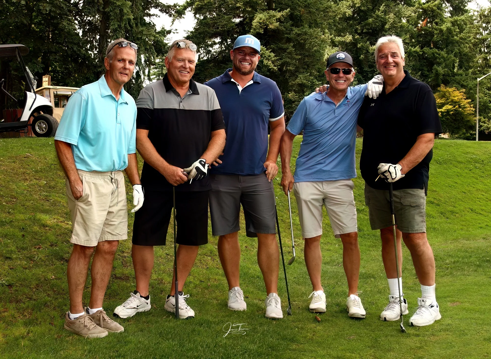

Men's Club

The Men’s Club at Tapps Island Golf Course offers a great opportunity for golfers to connect, compete, and improve their game in a welcoming and friendly environment. Located at Tapps Island Golf Course in Washington, the club hosts regular tournaments, league play, and special events that bring members together throughout the season. Whether you’re a seasoned player or just looking to get more involved in the golf community, the Men’s Club provides camaraderie, organized competition, and a fun way to enjoy the course.
Ladie's Club
.webp)
The Ladies Club at Tapps Island Golf Course provides a fun, supportive, and social environment for women who love the game of golf. Members enjoy organized league play, friendly competitions, and special events throughout the season, creating opportunities to build friendships while improving their skills. Whether you’re a beginner or an experienced golfer, the Ladies Club offers a welcoming community and a great way to stay active and engaged on the course.
Senior Club

The Senior Club at Tapps Island Golf Course offers an enjoyable and relaxed atmosphere for golfers who want to stay active and connected through the game. With organized weekly play, friendly competitions, and seasonal events, the club brings seniors together for both camaraderie and a little healthy competition. It’s a great way to enjoy the course, sharpen your skills, and build lasting friendships within the Tapps Island golf community.